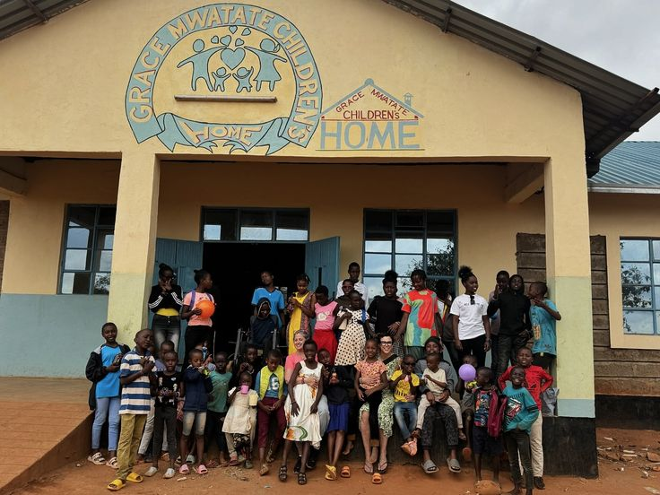
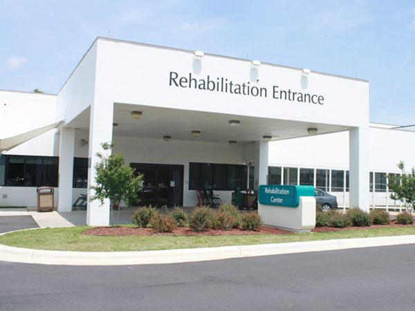
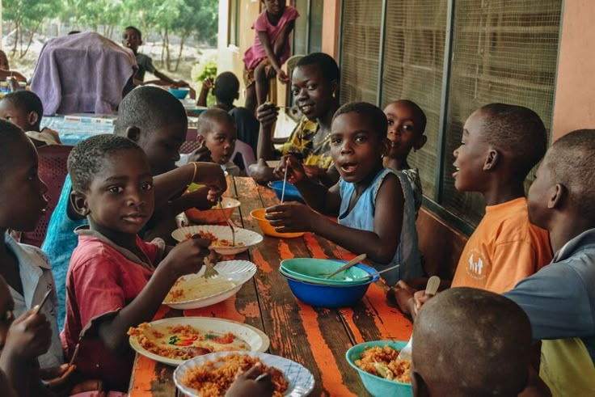

Shelter Categories
Emergency Shelters
Children in crisis situations often have no immediate safe place, leading to exposure to danger, hunger, and abuse. SafeNest helps identify shelters with available space in real-time, so children can be placed quickly.

Medical Support Centers
Children often lack access to basic healthcare, leading to untreated illnesses and poor health. Solution: The system helps prioritize shelters needing medical supplies or support, improving response time.

Community Homes
Institutional shelters can lack personalized care and emotional support. SafeNest promotes community-based care, helping connect support to family-style homes.

Psychological Support Centers
Many homeless children experience trauma, anxiety, and emotional stress after living in unsafe environments. SafeNest helps identify shelters that urgently need counseling resources and mental health support.
Basic Needs
Shelters struggle with shortages of food, clothing, and daily essentials, especially during high demand. SafeNest allows shelters to post urgent needs, so donors can respond quickly and efficiently.

Rehab and Education Centres
Many homeless children miss out on education and long-term development, keeping them stuck in poverty. The platform highlights centers needing educational resources, allowing donors to support learning programs.

Girls’ Protection Shelters
Vulnerable girls often face risks such as abuse, exploitation, and lack of education opportunities. SafeNest supports shelters focused on providing safety, education, and empowerment programs for girls.
Orphan Support Homes
Orphaned children may lack stable care, emotional support, and basic necessities. The platform helps donors locate orphan homes in need of food, clothing, education materials, and financial assistance.
